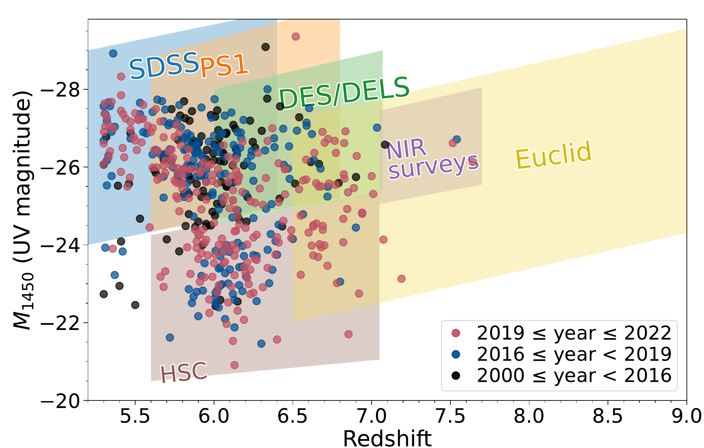
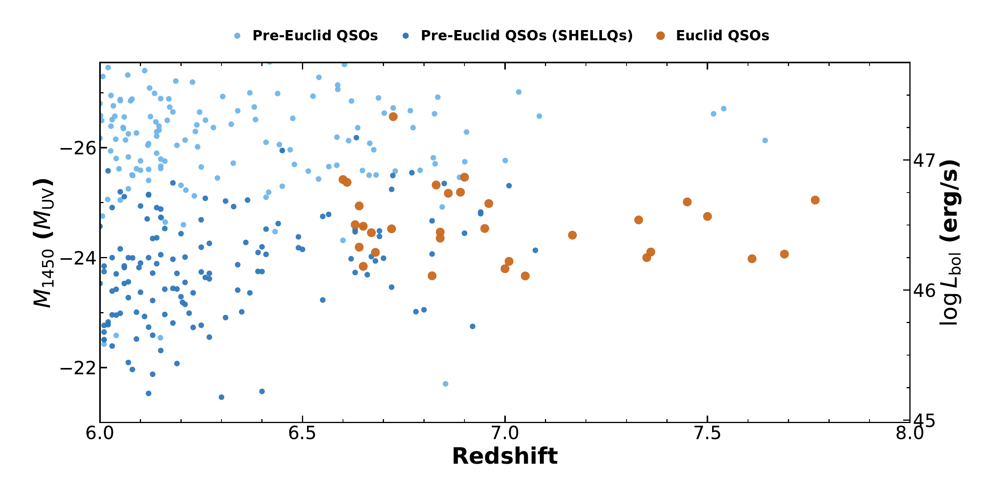
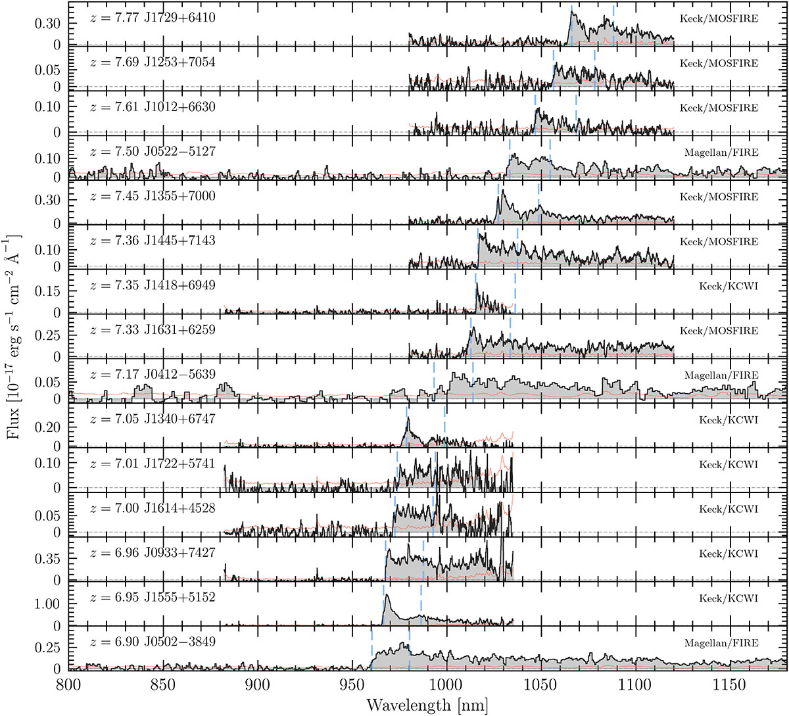

The high-z quasar population is mapped by wide-area surveys. Over the past two decades, optical surveys (SDSS, PS1, DES/DELS, HSC) have built up a sample of several hundred quasars at z ~ 6, but they stop near z ≈ 7, where quasar light shifts past the red limit of silicon detectors. Beyond that, searches relied on ground-based infrared surveys, which are too shallow to find any but the brightest objects, and twenty years of effort yielded only 9 quasars. Euclid changes this. Its near-infrared imaging goes roughly three magnitudes deeper over 14,000 square degrees, pushing the search into the completely unexplored regime: from z=7-9, and down to luminosities where the bulk of the population lives at z>7.

In this work (https://www.aanda.org/articles/aa/full_html/2026/07/aa58883-26/aa58883-26.html), we searched Euclid imaging taken between February 2024 and August 2025, the first stretch of the survey, and confirmed 31 new quasars at z = 6.6 to 7.8. Twelve sit at z > 7, more than doubling the number known. The two most distant, EUCL J172902.75+641018.1 and EUCL J125308.55+705432.3, are seen when the Universe was about 670 million years old. A companion paper, Euclid: A UV-faint quasar in a highly luminous star-forming host galaxy at z ≈ 7.7, follows the latter with NOEMA: its host galaxy holds roughly ten billion solar masses of stars, forms new ones at over 250 solar masses per year, and still has a large reservoir of molecular gas to draw on.

A sample like this makes population-level questions possible: how the earliest supermassive black holes grew, and what the gas around them looked like during reionization. It is also only a first pass. The data searched here are a fraction of the planned 14,000 square degrees, and follow-up with JWST, ALMA, and ground-based telescopes is underway to measure black hole masses, gas, dust, and host galaxies.
